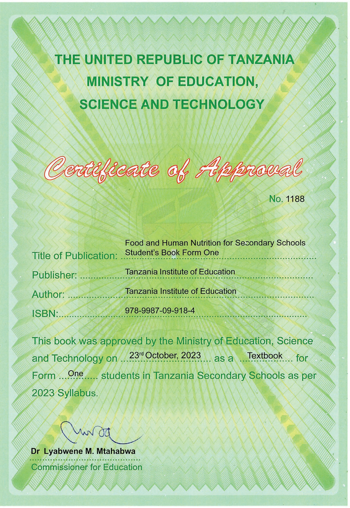

Food and Human
Nutrition
for Secondary Schools
Student’s Book
Form One

THE UNITED REPUBLIC OF TANZANIA
MINISTRY OF EDUCATION, SCIENCE AND TECHNOLOGY
Certificate of Approval
No. 1188
Title of Publication: Food and Human Nutrition for Secondary Schools Student’s Book Form One
Publisher: Tanzania Institute of Education
Author: Tanzania Institute of Education
ISBN: 978-9987-09-918-4
This book was approved by the Ministry of Education, Science and Technology on 23rd October, 2023 as a Textbook for Form One students in Tanzania Secondary Schools as per 2023 Syllabus.
Dr Lyabwene M. Mtahabwa
Commissioner for Education
Tanzania Institute of Education